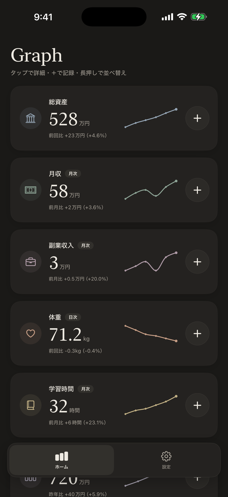
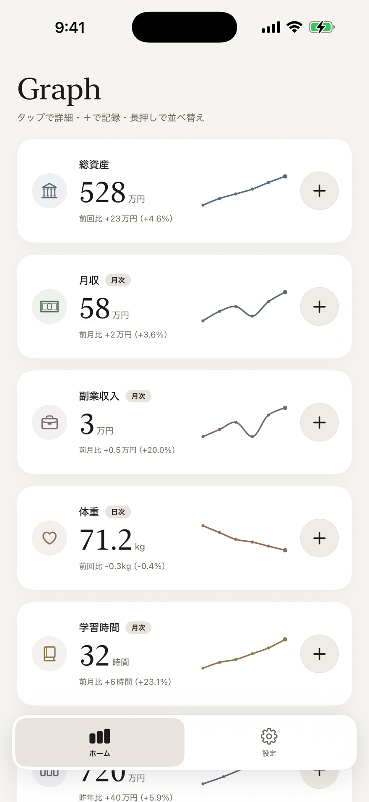
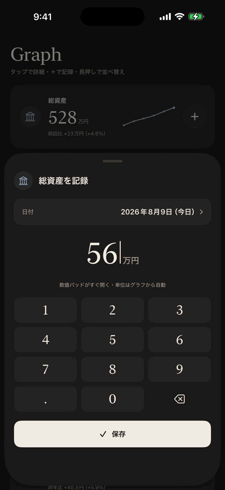
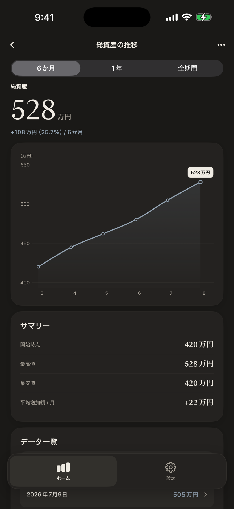
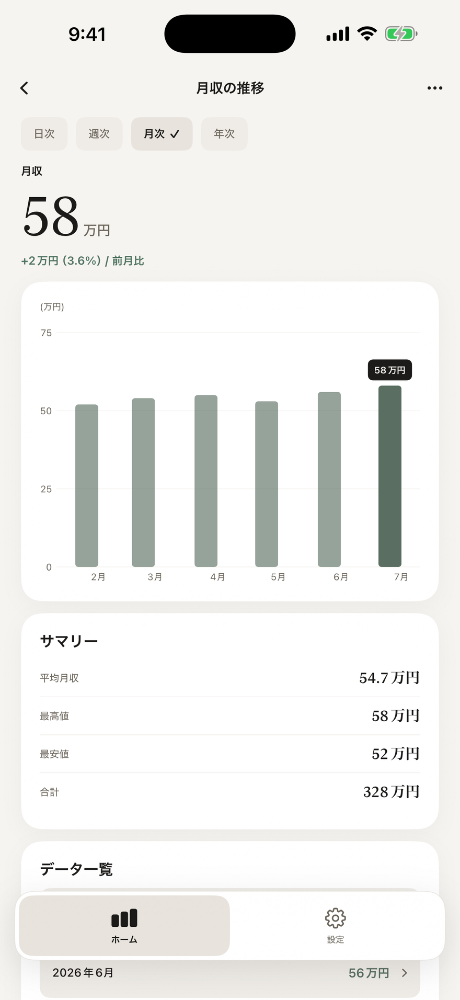
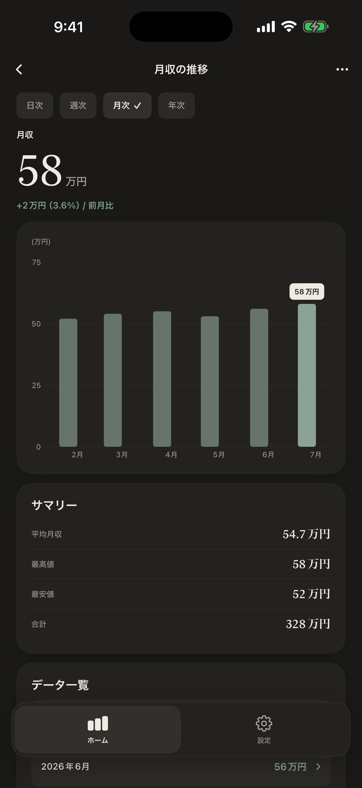
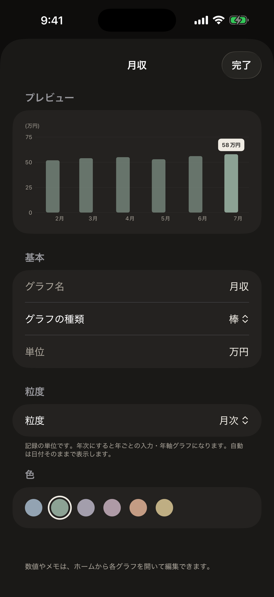
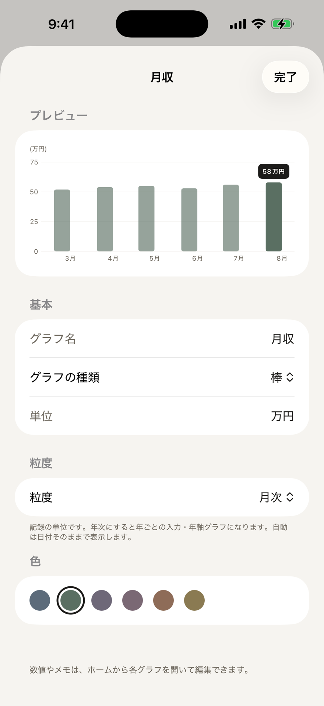

このアプリの魅力を詳しく
Graph を、画面で知る。
暮らしのあらゆる数字を、「＋」から2タップで記録して自動でグラフに。Graph の主な画面が、「数字を意味に変える」ために何をしてくれるのか——ひとつずつ紹介します。


ギャラリー
すべての記録が、ひと目で並ぶ。
総資産・月収・体重・学習時間……記録したい数字を、カードで一覧に。前回比とミニグラフが添えられ、いまの勢いがすぐ分かります。
続けるほど、あなただけのグラフギャラリーが増えていきます。

記録
2タップで、記録は終わる。
ホームに並ぶグラフのカードの「＋」を押すと、数値パッドがそのまま開きます。単位はそのグラフから自動、日付もその期間に既定です。
掘り下げた入力フォームは要りません。多くの場合、開いて数字を打つだけ——2タップで終わります。


グラフ詳細
推移も前回比も、自動で。
記録すると、推移グラフ・前回比・サマリー（開始時点／最高／最安／平均）・データ一覧が自動で整います。1ヶ月 / 1年 / 全期間で振り返り。
数字が、ひと目で意味を持ちます。


いろいろなグラフ
折れ線も、棒も。
数字の性質に合わせて、折れ線でも棒でも。月収のような区切りのある数字は棒グラフで、平均・最高・合計まで自動で集計します。
見たい形で、振り返れます。


作成・編集
グラフは、自由に作れる。
プリセットから選ぶも、自分で定義するも自由。横軸・縦軸の名前や単位を決めれば、日付以外の「商品別の売上」のような任意のグラフも作れます。
あなたの見たい軸で、自由に。
プライバシー
あなたの数字は、あなたのもの。
記録はすべてあなたの端末の中（SwiftData）に保存されます。AI も通信も広告もありません。CSV で書き出すこともできます。詳しくは Graph のページ をご覧ください。